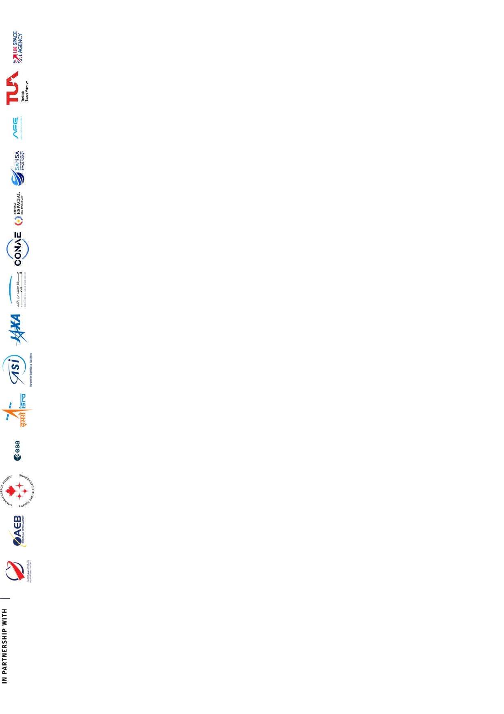

- 

Data de Nascimento: 13/06/2008
Endereço: Bairro São Jorge
Telefone: (34) 9641-4720
Com os cursos e algumas expêriencias tive, pretendo fazer agora estágios e conhecer áreas do que é considerada Tecnologia da Informação. Com o intuito de encontrar
a área que mais me identifico e fazer uma formação acadêmica mais voltada a mesma.